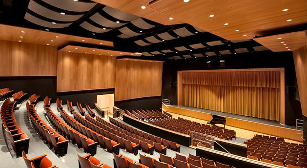

Campus Life

LIBRARY
CHURCH

AUDITORIUM
School Achievments

Won first prize in inter school debate on environment pollution
I was so exited for this comptition my family was to involved I like environment so much It was a delight to win first prize.
What's New
-
New Computer Lab
The school has the state of the art Computer lab-Gigabyte. The school ensures that the computers are replaced every few years to keep pace with the changing technology. The lab is well spaced out and can accommodate over 100 students at a time. The lab boasts of an exhaustive collection of educational C.D’s which are used as a teaching aid by the school faculty. Multimedia in education plays a pivotal role in our curriculum and we have a multimedia projection device which provides visual aid for three dimensional teaching. The projection system is installed in our auxiliary lab which is equipped with computers with TFT screens. The teacher’s cubicle is in the nucleus of the lab which houses computers for the use of staff members. All the computers are networked which facilitates practical sessions. Internet facility is provided to staff. Students are allowed access but only under guidance for project work. Computer education is mandatory for all our students from Class I-XII and the program of study is adapted every few years to keep our children up to date with the changing technological scenario. The computer lab is centrally air-conditioned.
-
Chemistry Laboratory

Chemistry lab is situated on the first floor of the school building. It comprises of main lab and a store room and a separate place for LPG connection which provides LPG gas for conducting chemistry practicals. The lab is very well lit and ventilated. The exhaust fans have also been provided in the lab. The lab also has a good drainage system. One of the walls of the main lab is lined with approachable cabinets which contains all the chemicals and the glass apparatus. The store room is also provided with cabinets, shelf tops and water connection. The work top provided to the students is wide and spacious. The open shelf is provided on top of the table along with water connection and gas connection. The open shelf is commonly used to keep chemicals in the reagent bottles. Cabinets are provided below the worktop table for keeping the apparatus used in the chemistry lab. One cabinet is provided to each student. The apparatus used in the lab are latest and of good quality. New edition to the vast apparatus agglomeration is the Seat-Student Environment Administration Teacher- Friendly micro scale chemistry laboratory kit. This apparatus requires the chemicals in minute quantity. The lab can cater to 20 students at a time. The different apparatus used in the lab are Kipps apparatus, physical balance, boiling tube, tripod stand, clamp stand, test tubes, conical flasks, etc. All the glass apparatus are of good quality to minimize the breakage. The chemicals are stored in the proper reagent bottles and are easily accessible to the students. The students are able to perform all the practicals required for CBSE prescribed syllabi. Fire extinguishers are installed for any emergency. Proper gas connection records are maintained.
Contact Us